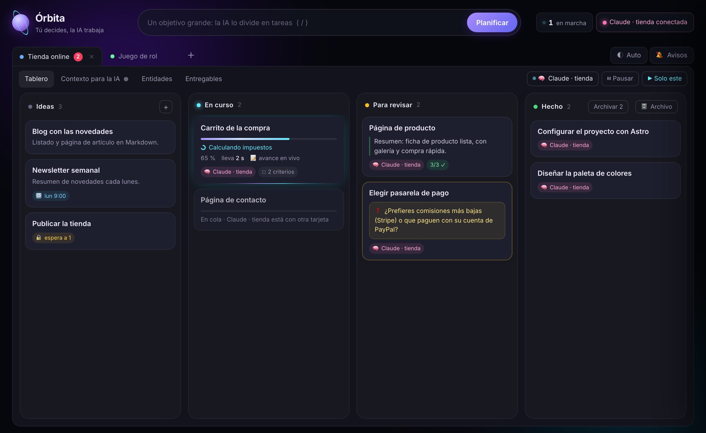
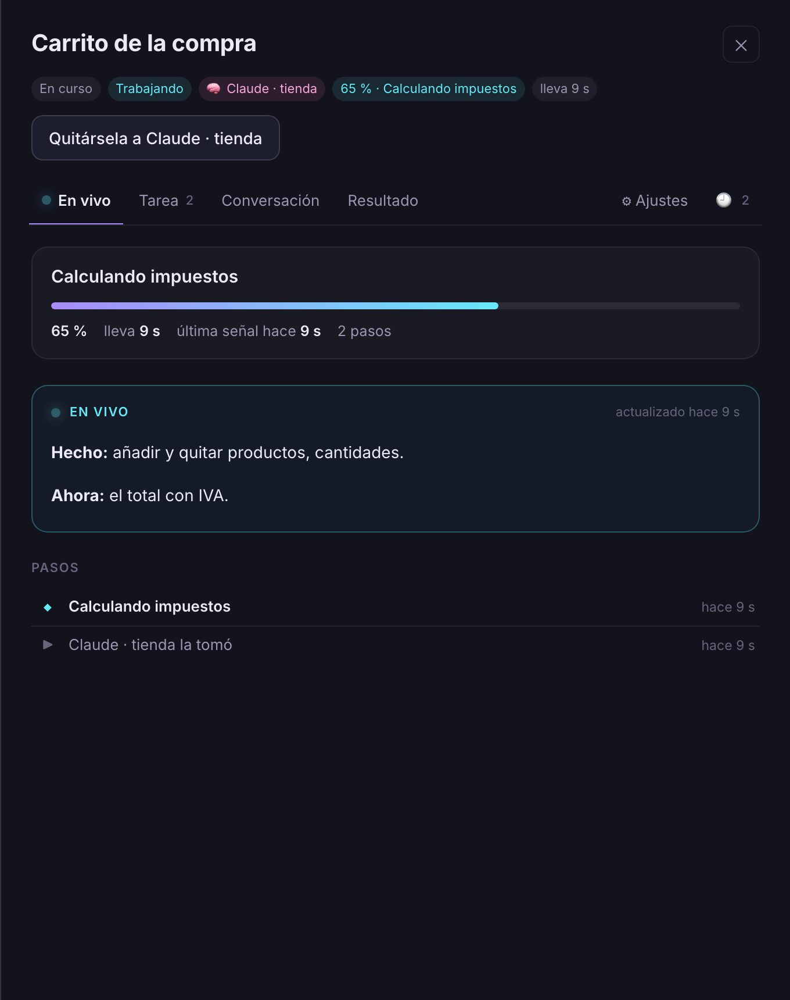
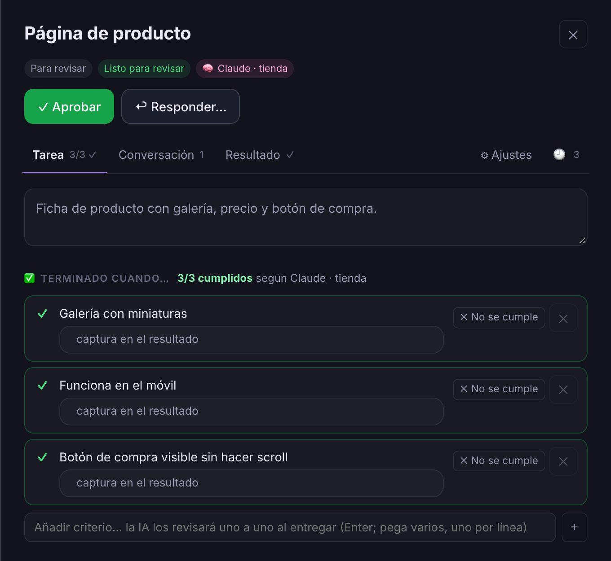
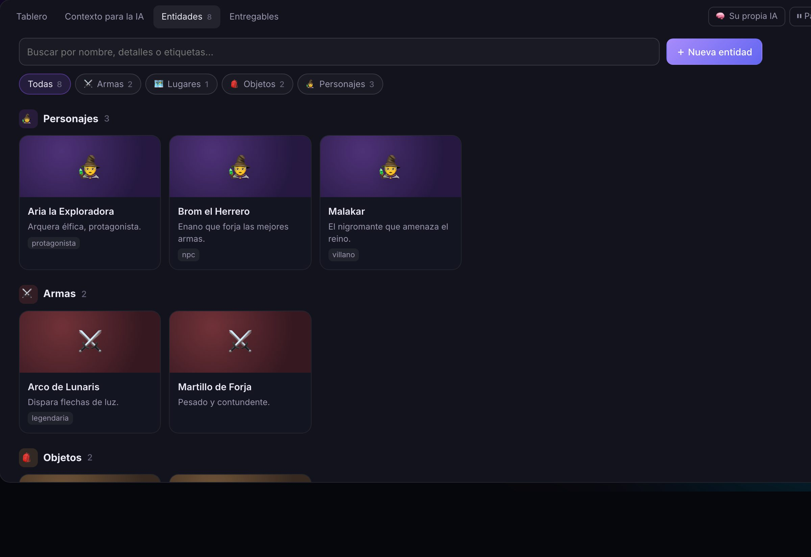
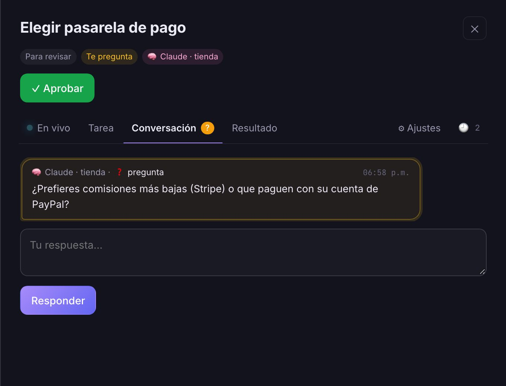

Kanban local + tu IA por MCP
El tablero que trabaja con tu IA
Escribe lo que hay que hacer, arrastra la tarjeta a «En curso» y tu propia IA (Claude Code, Cursor, Claude Desktop…) la toma, te enseña su progreso en vivo y te entrega el resultado para que lo revises. Tú decides; la IA trabaja.

Cómo funciona
Órbita no tiene IA propia ni te pide API keys: la inteligencia la pone la IA que ya usas.
-
1
Abre Órbita
Con
npm startse ejecuta en tu equipo y se abre en su propia ventana. Cada proyecto vive en su carpeta de trabajo (la de tu código o tus documentos). -
2
Conecta tu IA
Una sola vez, por MCP. Después, en cualquier sesión, le dices «quédate escuchando el tablero» y se queda esperando trabajo.
-
3
Arrastra a «En curso»
La IA toma la tarjeta, trabaja con sus propias herramientas en tu carpeta y te va contando qué hace. Al terminar, la deja en «Para revisar».
-
4
Revisa y decide
Apruébala o respóndele desde la tarjeta: lo recibe al momento y sigue. Nunca tienes que salir del tablero.
orbita/ con el tablero y los entregablesLa vida de una tarjeta
- IdeasLa creas tú (o la IA, al planificar un objetivo). Puede llevar criterios, adjuntos, dependencias o repetirse cada semana.
- En cursoEn cola hasta que una IA la toma; luego Trabajando, con su progreso en vivo. Si le falta algo, Te pregunta y espera.
- Para revisarLa IA entrega el resultado y revisa cada criterio. Tú lees, y Apruebas o le Respondes: vuelve a «En curso» con tu mensaje.
- HechoQueda con todas sus versiones. Si otras tarjetas la esperaban, se desbloquean solas. Luego se archiva.
Qué hace
La ves trabajar, en vivo
Cada tarjeta muestra el paso actual, el porcentaje y cuánto lleva. En su panel, la pestaña En vivo reúne todo:
- el paso, la barra de progreso y hace cuánto dio señales de vida (si se calla más de 3 minutos, te avisa);
- su avance escrito: lo hecho, lo que hace ahora y lo que sigue;
- la historia de pasos y los archivos que va escribiendo.
Si le escribes mientras trabaja, lo lee en su siguiente paso, sin detenerse.

«Terminado cuando…»
Pon criterios de aceptación y la IA no puede entregar sin revisarlos uno a uno, con su evidencia. Si alguno no se cumple, lo marcas y se lo devuelves: sabrá exactamente qué falta.

Entidades del proyecto
Lo que existe en el proyecto y perdura (los personajes de un juego, sus armas y objetos, las personas de un informe…) como fichas por categoría. La IA las va guardando mientras trabaja y las consulta en cada tarjeta.

Te pregunta cuando le falta algo
Si la IA necesita una decisión que solo tú puedes tomar, la tarjeta se pone en ámbar y te lo pregunta. Respondes ahí mismo y sigue. Todo pasa en el tablero: nunca tienes que ir a su chat.

- 🧠 Una IA por proyectoDos proyectos avanzan a la vez, cada uno con su sesión de IA.
- ❓ Te preguntaSi le falta una decisión, la tarjeta te lo pregunta y espera tu respuesta.
- 🎯 Planificar objetivosEscribe un objetivo grande y la IA lo divide en tarjetas, con dependencias.
- 🔁 Tareas programadasUna vez, cada día, cada semana o cada mes: la tarjeta pasa sola a «En curso».
- 🔑 SecretosClaves de API por proyecto: la IA ve los nombres, pide el valor y el tablero lo tapa.
- ⌘K ComandosHaz cualquier cosa sin el ratón: mover tarjetas, cambiar de proyecto, pausar, exportar…
- ▶ Vista previa seguraLas páginas y juegos que hace la IA funcionan dentro, aislados del tablero.
- ↻ Versiones y exportarCada entrega es una versión; cópiala, descárgala en .md, como página o en PDF.
- 🔒 Dependencias«Espera a…»: una tarjeta no empieza hasta que terminan aquellas de las que depende.
- ⏸ Pausa sin cortesPausa un proyecto y su IA termina la tarjeta que tiene antes de parar. Reanuda cuando quieras.
- 📎 Adjuntos y conocimientoArrastra archivos a una tarjeta o al proyecto: la IA los recibe como material de trabajo.
- 🧩 PlantillasInvestigación, informe, revisión de código, corregir un fallo… y las tuyas, con {campos} para rellenar.
- 🗂 Contexto para la IAInstrucciones, memoria, conocimiento y secretos del proyecto, en una sola página: la IA lo recibe con cada tarjeta.
- 🗄 Archivo y papeleraLo hecho se archiva sin borrarse, y lo que borra una IA se puede restaurar durante 30 días. Todo desde la columna Hecho.
- 📦 EntregablesMarca qué tarjetas son entregables: al aprobarlas, su resultado se guarda en la sección «Entregables» del proyecto.
- ⚠ Por qué esperaSi ninguna IA puede tomar una tarjeta en curso, te dice por qué y te da el botón para resolverlo.
- 🔔 Avisos«(2) Órbita» en la pestaña, aviso del navegador y un sonido suave cuando te entrega o te pregunta.
- ◐ Claro y oscuroSigue al sistema o elige tú. Y en su propia ventana, como una aplicación.
Para qué sirve
Para cualquier trabajo que tu IA pueda hacer en una carpeta de tu ordenador.
- 💻Desarrollar softwarePon el backlog de tu app en el tablero y deja que la IA vaya tomando tarjetas: implementa, prueba y te entrega con capturas. Tú revisas y apruebas, como en un equipo.
- 🔎Investigar e informar«Investigar {tema}» o «Informe de {asunto}» con criterios claros: la IA busca, compara, cita fuentes y deja el informe como entregable.
- 🎮Juegos, historias y mundosLas entidades guardan personajes, objetos y lugares, y la IA los consulta en cada tarea para que todo encaje.
- 🔁RutinasUn resumen cada lunes, una revisión diaria, un informe el día 1 de cada mes: tarjetas programadas que la IA hace sola.
Lo que puede hacer la IA
Órbita le ofrece 24 herramientas por MCP. Estas son las principales:
Trabajar
wait_for_workespera hasta que hay una tarjeta para ella y la tomareport_progressinforma del paso, el porcentaje y el avance en vivosubmit_resultentrega el resultado, con la revisión de cada criterioask_humante pregunta cuando le falta una decisión
Organizar
open_projectcrea o abre un proyecto en su carpeta y se queda escuchándolocreate_card,update_cardplanifica en tarjetas, con dependenciasdelete_card,trashborra a la papelera (y restaura)add_commentte deja una nota sin entregar
Recordar
update_memoryguarda lo aprendido para las próximas tarjetasentitiesmantiene las entidades del proyectoget_secretlee una clave del proyecto sin que aparezca en el tablero
Archivos
write_fileguarda entregables (informes, capturas, páginas…) enorbita/read_filelista y lee adjuntos, conocimiento y entregables- Y, con sus propias herramientas, trabaja en el código de tu carpeta
Por dentro
127.0.0.1:4321. Sirve el tablero y el MCP (/mcp, HTTP «streamable»), y avisa a la página en vivo.wait_for_work mantiene la llamada abierta hasta que hay trabajo: en cuanto mueves una tarjeta a «En curso», la recibe.orbita/tablero.json dentro de su carpeta, con escritura atómica. La lista de proyectos y los secretos, en la carpeta de datos del sistema.Host y Origin), CSP estricta y vista previa en un origen aislado con clave. Los valores de los secretos nunca llegan al tablero.npm install y npm start. Funciona sin internet.npm test).Tus datos no salen de tu equipo
- Sin servidor central ni cuentas. Órbita se ejecuta en tu máquina y solo escucha en
127.0.0.1. - Sin API keys. La IA es la tuya, con tu suscripción; Órbita solo le pasa las tarjetas.
- El proyecto va con su carpeta. El tablero se guarda en
orbita/, dentro de la carpeta de trabajo: cópiala o súbela a un repositorio y el proyecto va con ella. - Protegida del navegador. Rechaza peticiones de otras webs y sirve lo que escribe la IA aislado del tablero.
Empezar
1 · Abre Órbita
Necesitas Node.js 22 o posterior:
git clone https://github.com/osmely/orbita
cd orbita
npm install
npm startSe abre en http://localhost:4321, en su propia ventana con Chrome, Edge o Brave. Para actualizarla: git pull y vuelve a arrancarla; tus proyectos no se tocan.
2 · Conecta tu IA
En Claude Code, una sola vez:
claude mcp add --transport http --scope user orbita http://localhost:4321/mcpDespués, pega en una sesión de Claude la instrucción que te da Órbita en el panel 🧠 de tu proyecto.
Cursor, Windsurf, VS Code
{
"mcpServers": {
"orbita": { "url": "http://localhost:4321/mcp" }
}
}Claude Desktop
{
"mcpServers": {
"orbita": {
"command": "npx",
"args": ["-y", "mcp-remote", "http://localhost:4321/mcp"]
}
}
}También puedes pedírselo con tus palabras: «Abre en Órbita un proyecto aquí y quédate escuchando».
Atajos de teclado
- ⌘ K paleta de comandos
- N nueva tarjeta
- / escribir un objetivo
- Alt ↑↓ mover la tarjeta abierta
- Esc cerrar
Requisitos
- macOS, Windows o Linux.
- Un navegador moderno; con Chrome, Edge o Brave se abre en su propia ventana.
- Una IA con MCP: Claude Code, Cursor, Claude Desktop…
- Node.js 22 o posterior.
Preguntas frecuentes
¿Qué IA necesito?
Cualquiera que hable MCP: Claude Code, Cursor, Claude Desktop… Órbita no incluye IA ni cobra nada por ella.
¿Funciona sin IA?
Sí: es un kanban normal. Creas tarjetas, las arrastras y escribes los resultados tú. Si no hay ninguna IA conectada, las tarjetas de «En curso» esperan en cola.
¿Necesita internet?
Órbita no: la interfaz lleva dentro sus fuentes y librerías. Tu IA sí lo necesitará para funcionar.
¿Puedo tener varios proyectos a la vez?
Sí. Cada proyecto es una pestaña con su carpeta de trabajo, y puedes darle a cada uno su propia IA para que avancen en paralelo.
¿Qué pasa si cierro la ventana?
Órbita sigue en marcha y la IA puede seguir trabajando. Para cerrarla del todo: ⌘K → «Cerrar Órbita». Al abrirla otra vez, todo está donde lo dejaste.
¿Y si la IA se equivoca?
Nada se da por bueno sin ti: cada entrega va a «Para revisar». Le respondes con lo que falta y lo rehace; cada entrega queda como versión, con «Ver cambios» respecto a la anterior.
¿Puedo quitarle una tarjeta a la IA?
Sí: muévela, pausa su proyecto o pulsa «Quitársela». La IA recibe un aviso para que se detenga; si fue una pausa, lo que llevaba se conserva y la retoma al reanudar.